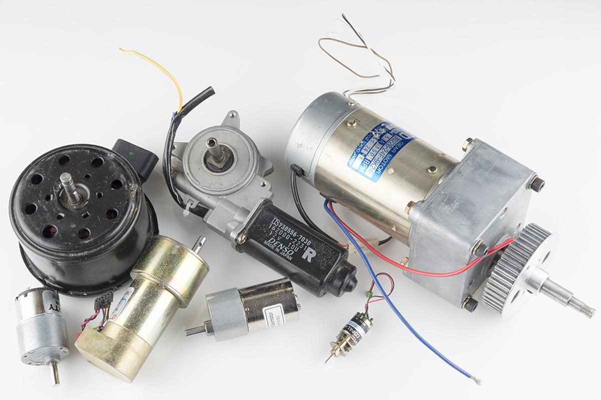

Output devices
This week's assignement is about output devices: we are learning how to make various motors work, what are their mechanisms and principles, when and why use a specific one instead of another.
I might have enough material at home (covid-19 restrictions) to build an incubator system that could helps Maud Bausier, my partner who initiated this project but needed help to finish it, to grow mycellium or any fermented food (tempeh, sriracha, etc.).
I'm going to use a thermistor (to know to temperature inside the incubator), a thermopad (to warm it up), a fan (to cool it down), a LCD screen (to know what's going on) and two push buttons to adjust the desired temperature inside the incubator.
Motors
But first, I needed some basics about motors: a motor is mainly made of coils and magnets. When current goes through a coil, a magnetic field is generated around it. The higher the current, the greater the field. This magnetic field creates polarity which is used to create a rotational force. This force is called the torque and its value depends on the motor's input current. More current implies stronger magnetic field in the coils, that means more attraction/repulsion.
Image source: ITP Physical Computing
DC motor
Maybe the simplest and most common motor in electronics, it converts current electrical energy into mechanical energy. The motor spins in one direction. Switching its polarity changes its direction. Varying the current supplied varies the speed of the motor.
There are two main kinds of DC motor: the brushed one and the brushless one. The first one is more commonly used because it is the cheaper one. The brushless is bit more expensive, but it is less noisy and can last a lot longer because it doesn't need to be maintained, simply because there is almost no friction inside it.
 Image source: Sparkfun: Motors and selecting the right one